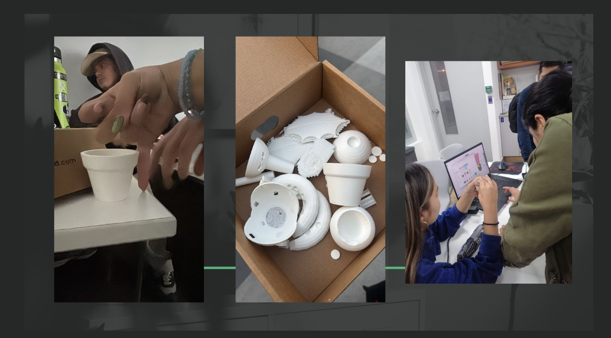

SEGUIR INTENTANDO ARMAR LA IMPRESIÓN 3D
En la semana 13, continuamos con los intentos de imprimir las piezas para el prototipo. A pesar de los avances previos, todavía enfrentamos algunos problemas con la precisión de las impresiones. Esto nos obligó a realizar ajustes adicionales en los archivos de diseño y en la configuración de la impresora. Cada intento fallido nos permitió ajustar mejor los parámetros y aprender más sobre cómo lograr piezas funcionales con la impresora 3D.
Uno de los mayores desafíos fue calibrar adecuadamente la impresora para obtener piezas que se ajustaran perfectamente al ensamblaje del prototipo. Aunque al principio los resultados no fueron los esperados, pudimos mejorar la calidad de las piezas ajustando la temperatura, la velocidad de impresión y el material. También cambiamos algunos de los archivos de diseño para hacer las piezas más resistentes y fáciles de ensamblar.
Avances y Próximos Pasos
Al final de la semana, logramos imprimir varias piezas clave para el prototipo. Aunque todavía quedaban algunos detalles por ajustar, como la precisión en las conexiones para los sensores y la bomba, las piezas comenzaron a encajar correctamente en el sistema. Esto nos permitió avanzar en el ensamblaje físico del prototipo, y cada día estábamos más cerca de completar el proyecto. En las siguientes semanas, seguiremos trabajando en las piezas restantes y ajustando las configuraciones para asegurar que el prototipo funcione a la perfección.